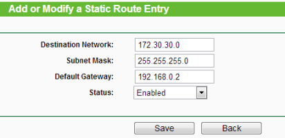

On-Site Workshop: June 14
Module Introduction
Linux Introduction
Preparatory Lab
Shell Scripting
Vagrant and Sense HAT
ASSESSMENT-1: Linux Shell Scripting
Assessment Details

Shell Scripting Grading Rubric

Assessment-Guides
ASSESSMENT-2: IoT Application
Assignment 2 Specification
Proposal Template
Week 1
Linux and Shell Scripting
Ubuntu For Beginners

Using Linux

Commands Cheatsheet

Linux Practice Exercises
Introduction to Computing
Introduction to Networks
Home Network
Week 2
Shell Scripting
The Shell

Text Manipulation

Scripting Exercises
Virtualisation
Introduction to Virtualisation
Virtualisation Advantages
Virtualisation Challenges
Hardware Virtualisation
Connecting to a VM
Introduction to Vagrant
Vagrant and Virtualisation
Week 3
Computer History & Architecture
From Abacus to iPhone

Definable Generations of Computing

Computer Architecture 

CPU
TCP/IP Protocol Stack
TCP/IP Protocol Stack & Data Link

Packet Sniffing using TShark
Week 4
Computer Number Bases
Binary Number Representation

Hexadecimal Number Representation

Octal Number Representation

Signed Number Representation

NoBases
Networking
IP Address Format

IP Conversion

IP Subnet Mask
Assigning IP Addresses
IP Networking
Week 5
Gates and Circuits
Logic Gates Representation

Boolean Algebra 

Combinational Circuits

Transistors and Integrated Circuits

Boolean
Raspberry Pi
Introduction to Raspberry Pi
The Headless RPi
Week 6
Logic Gates and Circuits
Karnaugh Map Gate Simplification 

Circuits 

Logic
Wireless Communication Networks
Wireless Networks
Personal Area Networks
WiFi(802.11)
Presence Detector 1
BLE
Week 7
Flip Flop Circuits · Fetch-Execute
Flip-Flop Sequential Circuit

CPU Architectures 

Transport Layer

Transport Layer

TCP-Sockets
Week 8

Week 8

Operating Systems

Lab
<<<<<<< HEAD
Web APIs & HTTP
Web APIs in IoT
MQTT and HTTP
Messaging Lab
Week 9
Scheduling

Operating Systems

Processes

Scheduling

Labs
Internet of Things Platforms
IoT Platforms
Wia Lab
Week 10
Memory Management
Memory

Memory Management Techniques

Virtual Memory

Labs
Application Layer Protocols/IoT platforms 2
DHCP
Thingspeak Tutorial 1
ThingSpeak Tutorial 2
Week 11
Memory Management
I/O Devices

I/O Data Transfer Modes

I/O Model

RAID and Disk Cache 

Labs
IoT Mobile Apps
Mobile Device IoT

Blynk
Week 12
Module Overview
Computer Systems

Operating Systems

Computer Systems and Networks
All slides's in Module
Module Introduction
Linux Introduction
Assessment Details

Shell Scripting Grading Rubric

Assignment 2 Specification
Ubuntu For Beginners

Using Linux

Commands Cheatsheet

Introduction to Networks
The Shell

Text Manipulation

Introduction to Virtualisation
Virtualisation Advantages
Virtualisation Challenges
Hardware Virtualisation
Connecting to a VM
Introduction to Vagrant
From Abacus to iPhone

Definable Generations of Computing

Computer Architecture 

TCP/IP Protocol Stack & Data Link

Binary Number Representation

Hexadecimal Number Representation

Octal Number Representation

Signed Number Representation

IP Address Format

IP Conversion

IP Subnet Mask

Assigning IP Addresses
Logic Gates Representation

Boolean Algebra 

Combinational Circuits

Transistors and Integrated Circuits

Introduction to Raspberry Pi
Karnaugh Map Gate Simplification 

Circuits 

Wireless Networks
Personal Area Networks
WiFi(802.11)
Flip-Flop Sequential Circuit

CPU Architectures 

Transport Layer

Operating Systems

Web APIs & HTTP
Web APIs in IoT
MQTT and HTTP
Operating Systems

Processes

Scheduling

IoT Platforms
Memory

Memory Management Techniques

Virtual Memory

DHCP
I/O Devices

I/O Data Transfer Modes

I/O Model

RAID and Disk Cache 

Mobile Device IoT

Computer Systems

Operating Systems
